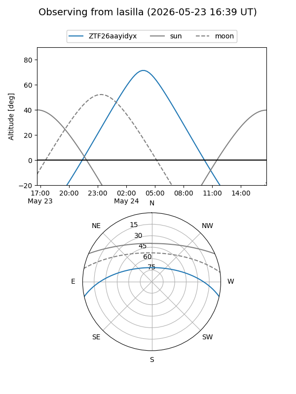
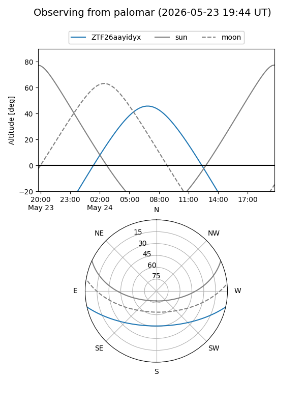

ZTF26aayidyx
Target ZTF26aayidyx at 2026-05-24 07:02
Aliases and brokers:
lsst-FINK: link
lsst-Lasair: link
lsst-ALeRCE: link
ztf-FINK: link
ztf-Lasair: link
ztf-ALeRCE: link
alt names
ZTF26aayidyx (ztf,fink_ztf)
Coordinates:
equatorial (ra, dec) = 227.4624,-10.72510
equatorial (HMS+DMS) = 15:09:50.97,-10:43:30.37
galactic (l, b) = (349.1682,+39.41273)
Flags:
Photometry:
last ztfg=18.46
1 ztfg detections
Lightcurve
Visibility


Additional plots